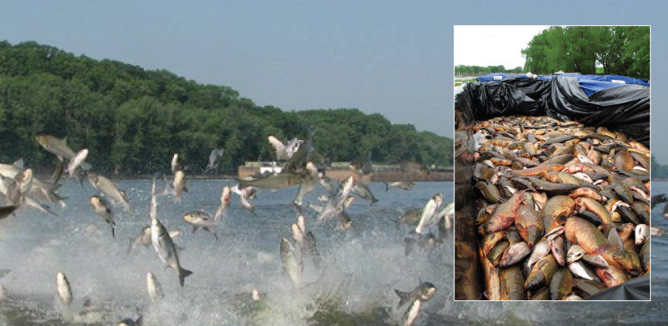
Imagine sailing down a river in a small motorboat on a weekend afternoon; the water is smooth, and you are enjoying the sunshine and cool breeze when suddenly you are hit in the head by a 20-pound silver carp. This is a risk now on many rivers and canal systems in Illinois and Missouri because of the presence of Asian carp.
This fish—actually a group of species including the silver, black, grass, and big head carp—has been farmed and eaten in China for over 1,000 years. It is one of the most important aquaculture food resources worldwide. In the United States, however, Asian carp is considered a dangerous invasive species that disrupts ecological community structure to the point of threatening native species.
The effects of invasive species (such as the Asian carp, kudzu vine, predatory snakehead fish, and zebra mussel) are just one aspect of what ecologists study to understand how populations interact within ecological communities, and what impact natural and human-induced disturbances have on the characteristics of communities.
- 19.1 Population Demographics and Dynamics
- Describe how ecologists measure population size and density
- Describe three different patterns of population distribution
- Use life tables to calculate mortality rates
- Describe the three types of survivorship curves and relate them to specific populations
- 19.2 Population Growth and Regulation
- Explain the characteristics of and differences between exponential and logistic growth patterns
- Give examples of exponential and logistic growth in natural populations
- Give examples of how the carrying capacity of a habitat may change
- Compare and contrast density-dependent growth regulation and density-independent growth regulation giving examples
- 19.3 The Human Population
- Discuss how human population growth can be exponential
- Explain how humans have expanded the carrying capacity of their habitat
- Relate population growth and age structure to the level of economic development in different countries
- Discuss the long-term implications of unchecked human population growth
- 19.4 Community Ecology
- Discuss the predator-prey cycle
- Give examples of defenses against predation and herbivory
- Describe the competitive exclusion principle
- Give examples of symbiotic relationships between species
- Describe community structure and succession
| # | Lesson | Key Concepts | Source |
|---|---|---|---|
| 1 | Population Demographics & Dynamics | Population size, population density, quadrats, mark and recapture, species distribution (random, clumped, uniform), demography, life tables, mortality rates, survivorship curves (Type I, II, III) | CB 19.1 |
| 2 | Population Growth & Regulation | Exponential growth, logistic growth, carrying capacity (K), J-shaped curve, S-shaped curve, intraspecific competition, density-dependent regulation, density-independent regulation, K-selected and r-selected species | CB 19.2 |
| 3 | The Human Population | Human population growth, overcoming density-dependent regulation, age structure diagrams, economic development, population explosion, long-term consequences | CB 19.3 |
| 4 | Community Ecology | Predator-prey dynamics, defense mechanisms, mimicry, competitive exclusion principle, symbiosis (commensalism, mutualism, parasitism), community structure, succession | CB 19.4 |
| 5 | Practice Test | All topics — comprehensive assessment | All |
| Standard | Description | Lessons |
|---|---|---|
| BIO.9a | Investigating and understanding dynamic equilibria within populations, communities, and ecosystems | 1, 2, 3, 4 |
| BIO.9b | Understanding interactions within and among populations including carrying capacities, limiting factors, and growth curves | 1, 2, 3 |
| BIO.9c | Understanding the role of natural selection in populations and communities | 2, 4 |
- Describe how ecologists measure population size and density
- Describe three different patterns of population distribution
- Use life tables to calculate mortality rates
- Describe the three types of survivorship curves and relate them to specific populations
Populations are dynamic entities. Their size and composition fluctuate in response to numerous factors, including seasonal and yearly changes in the environment, natural disasters such as forest fires and volcanic eruptions, and competition for resources between and within species. The statistical study of populations is called demography: a set of mathematical tools designed to describe populations and investigate how they change. Many of these tools were actually designed to study human populations. For example, life tables, which detail the life expectancy of individuals within a population, were initially developed by life insurance companies to set insurance rates. In fact, while the term "demographics" is sometimes assumed to mean a study of human populations, all living populations can be studied using this approach.
Populations are characterized by their population size (total number of individuals) and their population density (number of individuals per unit area). A population may have a large number of individuals that are distributed densely, or sparsely. There are also populations with small numbers of individuals that may be dense or very sparsely distributed in a local area. Population size can affect potential for adaptation because it affects the amount of genetic variation present in the population. Density can have effects on interactions within a population such as competition for food and the ability of individuals to find a mate. Smaller organisms tend to be more densely distributed than larger organisms (Figure 19.2).
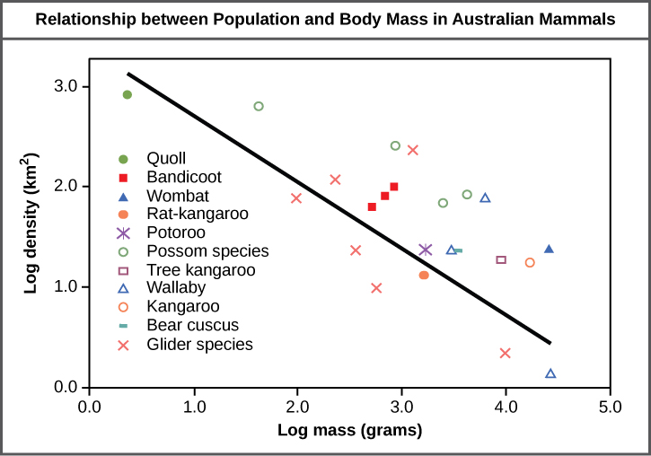
The most accurate way to determine population size is to count all of the individuals within the area. However, this method is usually not logistically or economically feasible, especially when studying large areas. Thus, scientists usually study populations by sampling a representative portion of each habitat and use this sample to make inferences about the population as a whole. The methods used to sample populations to determine their size and density are typically tailored to the characteristics of the organism being studied. For immobile organisms such as plants, or for very small and slow-moving organisms, a quadrat may be used. A quadrat is a wood, plastic, or metal square that is randomly located on the ground and used to count the number of individuals that lie within its boundaries. To obtain an accurate count using this method, the square must be placed at random locations within the habitat enough times to produce an accurate estimate. This counting method will provide an estimate of both population size and density. The number and size of quadrat samples depends on the type of organisms and the nature of their distribution.
For smaller mobile organisms, such as mammals, a technique called mark and recapture is often used. This method involves marking a sample of captured animals in some way and releasing them back into the environment to mix with the rest of the population; then, a new sample is captured and scientists determine how many of the marked animals are in the new sample. This method assumes that the larger the population, the lower the percentage of marked organisms that will be recaptured since they will have mixed with more unmarked individuals. For example, if 80 field mice are captured, marked, and released into the forest, then a second trapping 100 field mice are captured and 20 of them are marked, the population size (N) can be determined using the following equation:
Using our example, the population size would be 400.
These results give us an estimate of 400 total individuals in the original population. The true number usually will be a bit different from this because of chance errors and possible bias caused by the sampling methods.
In addition to measuring density, further information about a population can be obtained by looking at the distribution of the individuals throughout their range. A species distribution pattern is the distribution of individuals within a habitat at a particular point in time—broad categories of patterns are used to describe them.
Individuals within a population can be distributed at random, in groups, or equally spaced apart (more or less). These are known as random, clumped, and uniform distribution patterns, respectively (Figure 19.3). Different distributions reflect important aspects of the biology of the species; they also affect the mathematical methods required to estimate population sizes. An example of random distribution occurs with dandelion and other plants that have wind-dispersed seeds that germinate wherever they happen to fall in favorable environments. A clumped distribution, may be seen in plants that drop their seeds straight to the ground, such as oak trees; it can also be seen in animals that live in social groups (schools of fish or herds of elephants). Uniform distribution is observed in plants that secrete substances inhibiting the growth of nearby individuals (such as the release of toxic chemicals by sage plants). It is also seen in territorial animal species, such as penguins that maintain a defined territory for nesting. The territorial defensive behaviors of each individual create a regular pattern of distribution of similar-sized territories and individuals within those territories. Thus, the distribution of the individuals within a population provides more information about how they interact with each other than does a simple density measurement. Just as lower density species might have more difficulty finding a mate, solitary species with a random distribution might have a similar difficulty when compared to social species clumped together in groups.
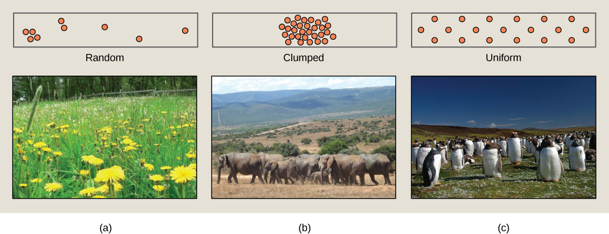
While population size and density describe a population at one particular point in time, scientists must use demography to study the dynamics of a population. Demography is the statistical study of population changes over time: birth rates, death rates, and life expectancies. These population characteristics are often displayed in a life table.
Life tables provide important information about the life history of an organism and the life expectancy of individuals at each age. They are modeled after actuarial tables used by the insurance industry for estimating human life expectancy. Life tables may include the probability of each age group dying before their next birthday, the percentage of surviving individuals dying at a particular age interval (their mortality rate, and their life expectancy at each interval. An example of a life table is shown in Table 19.1 from a study of Dall mountain sheep, a species native to northwestern North America. Notice that the population is divided into age intervals (column A). The mortality rate (per 1000) shown in column D is based on the number of individuals dying during the age interval (column B), divided by the number of individuals surviving at the beginning of the interval (Column C) multiplied by 1000.
For example, between ages three and four, 12 individuals die out of the 776 that were remaining from the original 1000 sheep. This number is then multiplied by 1000 to give the mortality rate per thousand.
As can be seen from the mortality rate data (column D), a high death rate occurred when the sheep were between six months and a year old, and then increased even more from 8 to 12 years old, after which there were few survivors. The data indicate that if a sheep in this population were to survive to age one, it could be expected to live another 7.7 years on average, as shown by the life-expectancy numbers in column E.
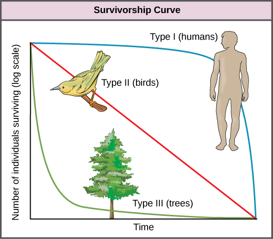
Another tool used by population ecologists is a survivorship curve, which is a graph of the number of individuals surviving at each age interval versus time. These curves allow us to compare the life histories of different populations (Figure 19.4). There are three types of survivorship curves. In a type I curve, mortality is low in the early and middle years and occurs mostly in older individuals. Organisms exhibiting a type I survivorship typically produce few offspring and provide good care to the offspring increasing the likelihood of their survival. Humans and most mammals exhibit a type I survivorship curve. In type II curves, mortality is relatively constant throughout the entire life span, and mortality is equally likely to occur at any point in the life span. Many bird populations provide examples of an intermediate or type II survivorship curve. In type III survivorship curves, early ages experience the highest mortality with much lower mortality rates for organisms that make it to advanced years. Type III organisms typically produce large numbers of offspring, but provide very little or no care for them. Trees and marine invertebrates exhibit a type III survivorship curve because very few of these organisms survive their younger years, but those that do make it to an old age are more likely to survive for a relatively long period of time.
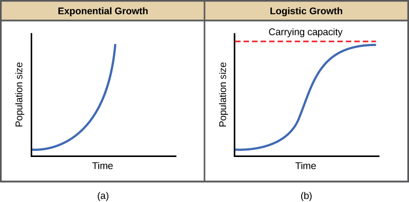
Explain the difference between population size and population density. Describe the three types of species distribution patterns (random, clumped, uniform) with an example of each. Then compare and contrast the three types of survivorship curves (Type I, II, III) and identify which organisms exhibit each type.
- Explain the characteristics of and differences between exponential and logistic growth patterns
- Give examples of exponential and logistic growth in natural populations
- Give examples of how the carrying capacity of a habitat may change
- Compare and contrast density-dependent growth regulation and density-independent growth regulation giving examples
Population ecologists make use of a variety of methods to model population dynamics. An accurate model should be able to describe the changes occurring in a population and predict future changes.
The two simplest models of population growth use deterministic equations (equations that do not account for random events) to describe the rate of change in the size of a population over time. The first of these models, exponential growth, describes theoretical populations that increase in numbers without any limits to their growth. The second model, logistic growth, introduces limits to reproductive growth that become more intense as the population size increases. Neither model adequately describes natural populations, but they provide points of comparison.
Charles Darwin, in his theory of natural selection, was greatly influenced by the English clergyman Thomas Malthus. Malthus published a book in 1798 stating that populations with unlimited natural resources grow very rapidly, which represents an exponential growth, and then population growth decreases as resources become depleted, indicating a logistic growth.
The best example of exponential growth in organisms is seen in bacteria. Bacteria are prokaryotes that reproduce largely by binary fission. This division takes about an hour for many bacterial species. If 1000 bacteria are placed in a large flask with an abundant supply of nutrients (so the nutrients will not become quickly depleted), the number of bacteria will have doubled from 1000 to 2000 after just an hour. In another hour, each of the 2000 bacteria will divide, producing 4000 bacteria. After the third hour, there should be 8000 bacteria in the flask. The important concept of exponential growth is that the growth rate—the number of organisms added in each reproductive generation—is itself increasing; that is, the population size is increasing at a greater and greater rate. After 24 of these cycles, the population would have increased from 1000 to more than 16 billion bacteria. When the population size, N, is plotted over time, a J-shaped growth curve is produced (Figure 19.5a).
The bacteria-in-a-flask example is not truly representative of the real world where resources are usually limited. However, when a species is introduced into a new habitat that it finds suitable, it may show exponential growth for a while. In the case of the bacteria in the flask, some bacteria will die during the experiment and thus not reproduce; therefore, the growth rate is lowered from a maximal rate in which there is no mortality. The growth rate of a population is largely determined by subtracting the death rate, D, (number organisms that die during an interval) from the birth rate, B, (number organisms that are born during an interval). The growth rate can be expressed in a simple equation that combines the birth and death rates into a single factor: r. This is shown in the following formula:
The value of r can be positive, meaning the population is increasing in size (the rate of change is positive); or negative, meaning the population is decreasing in size; or zero, in which case the population size is unchanging, a condition known as zero population growth.
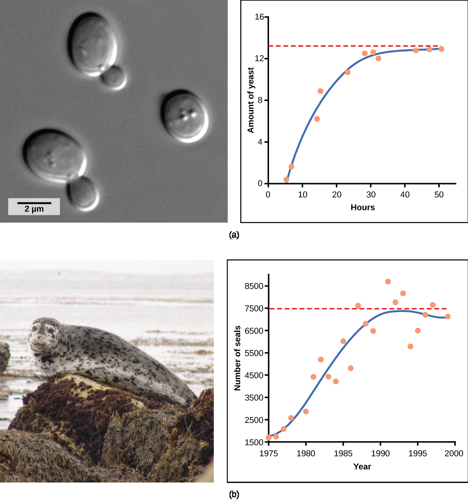
Extended exponential growth is possible only when infinite natural resources are available; this is not the case in the real world. Charles Darwin recognized this fact in his description of the "struggle for existence," which states that individuals will compete (with members of their own or other species) for limited resources. The successful ones are more likely to survive and pass on the traits that made them successful to the next generation at a greater rate (natural selection). To model the reality of limited resources, population ecologists developed the logistic growth model.
In the real world, with its limited resources, exponential growth cannot continue indefinitely. Exponential growth may occur in environments where there are few individuals and plentiful resources, but when the number of individuals gets large enough, resources will be depleted and the growth rate will slow down. Eventually, the growth rate will plateau or level off (Figure 19.5b). This population size, which is determined by the maximum population size that a particular environment can sustain, is called the carrying capacity, or K. In real populations, a growing population often overshoots its carrying capacity, and the death rate increases beyond the birth rate causing the population size to decline back to the carrying capacity or below it. Most populations usually fluctuate around the carrying capacity in an undulating fashion rather than existing right at it.
The formula used to calculate logistic growth adds the carrying capacity as a moderating force in the growth rate. The expression "K – N" is equal to the number of individuals that may be added to a population at a given time, and "K – N" divided by "K" is the fraction of the carrying capacity available for further growth. Thus, the exponential growth model is restricted by this factor to generate the logistic growth equation:
Notice that when N is almost zero the quantity in brackets is almost equal to 1 (or K/K) and growth is close to exponential. When the population size is equal to the carrying capacity, or N = K, the quantity in brackets is equal to zero and growth is equal to zero. A graph of this equation (logistic growth) yields the S-shaped curve (Figure 19.5b). It is a more realistic model of population growth than exponential growth. There are three different sections to an S-shaped curve. Initially, growth is exponential because there are few individuals and ample resources available. Then, as resources begin to become limited, the growth rate decreases. Finally, the growth rate levels off at the carrying capacity of the environment, with little change in population number over time.
The logistic model assumes that every individual within a population will have equal access to resources and, thus, an equal chance for survival. For plants, the amount of water, sunlight, nutrients, and space to grow are the important resources, whereas in animals, important resources include food, water, shelter, nesting space, and mates.
In the real world, phenotypic variation among individuals within a population means that some individuals will be better adapted to their environment than others. The resulting competition for resources among population members of the same species is termed intraspecific competition. Intraspecific competition may not affect populations that are well below their carrying capacity, as resources are plentiful and all individuals can obtain what they need. However, as population size increases, this competition intensifies. In addition, the accumulation of waste products can reduce carrying capacity in an environment.
Yeast, a microscopic fungus used to make bread and alcoholic beverages, exhibits the classical S-shaped curve when grown in a test tube (Figure 19.6a). Its growth levels off as the population depletes the nutrients that are necessary for its growth. In the real world, however, there are variations to this idealized curve. Examples in wild populations include sheep and harbor seals (Figure 19.6b). In both examples, the population size exceeds the carrying capacity for short periods of time and then falls below the carrying capacity afterwards. This fluctuation in population size continues to occur as the population oscillates around its carrying capacity. Still, even with this oscillation, the logistic model is confirmed.
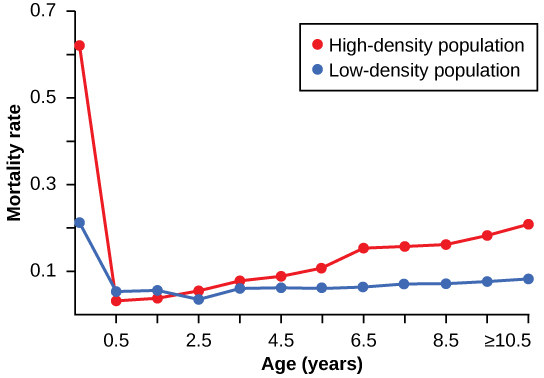
a. The carrying capacity of seals would decrease, as would the seal population.
b. The carrying capacity of seals would decrease, but the seal population would remain the same.
c. The number of seal deaths would increase, but the number of births would also increase, so the population size would remain the same.
d. The carrying capacity of seals would remain the same, but the population of seals would decrease.
The logistic model of population growth, while valid in many natural populations and a useful model, is a simplification of real-world population dynamics. Implicit in the model is that the carrying capacity of the environment does not change, which is not the case. The carrying capacity varies annually. For example, some summers are hot and dry whereas others are cold and wet; in many areas, the carrying capacity during the winter is much lower than it is during the summer. Also, natural events such as earthquakes, volcanoes, and fires can alter an environment and hence its carrying capacity. Additionally, populations do not usually exist in isolation. They share the environment with other species, competing with them for the same resources (interspecific competition). These factors are also important to understanding how a specific population will grow.
Population growth is regulated in a variety of ways. These are grouped into density-dependent factors, in which the density of the population affects growth rate and mortality, and density-independent factors, which cause mortality in a population regardless of population density. Wildlife biologists, in particular, want to understand both types because this helps them manage populations and prevent extinction or overpopulation.
Most density-dependent factors are biological in nature and include predation, inter- and intraspecific competition, and parasites. Usually, the denser a population is, the greater its mortality rate. For example, during intra- and interspecific competition, the reproductive rates of the species will usually be lower, reducing their populations' rate of growth. In addition, low prey density increases the mortality of its predator because it has more difficulty locating its food source. Also, when the population is denser, diseases spread more rapidly among the members of the population, which affect the mortality rate.
Density dependent regulation was studied in a natural experiment with wild donkey populations on two sites in Australia. On one site the population was reduced by a population control program; the population on the other site received no interference. The high-density plot was twice as dense as the low-density plot. From 1986 to 1987 the high-density plot saw no change in donkey density, while the low-density plot saw an increase in donkey density. The difference in the growth rates of the two populations was caused by mortality, not by a difference in birth rates. The researchers found that numbers of offspring birthed by each mother was unaffected by density. Growth rates in the two populations were different mostly because of juvenile mortality caused by the mother's malnutrition due to scarce high-quality food in the dense population. Figure 19.7 shows the difference in age-specific mortalities in the two populations.
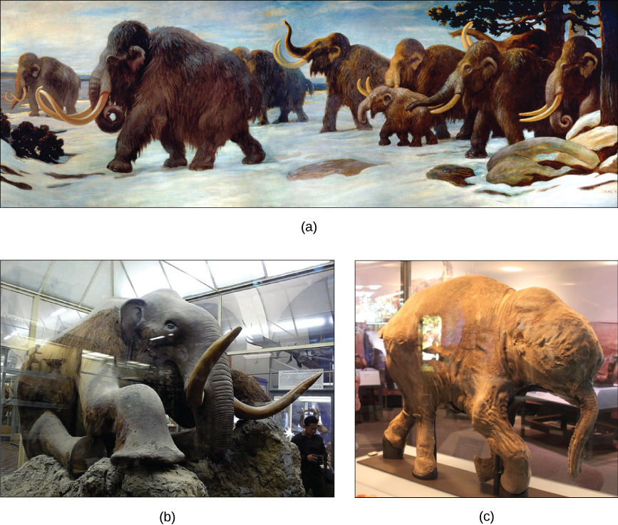
Many factors that are typically physical in nature cause mortality of a population regardless of its density. These factors include weather, natural disasters, and pollution. An individual deer will be killed in a forest fire regardless of how many deer happen to be in that area. Its chances of survival are the same whether the population density is high or low. The same holds true for cold winter weather.
In real-life situations, population regulation is very complicated and density-dependent and independent factors can interact. A dense population that suffers mortality from a density-independent cause will be able to recover differently than a sparse population. For example, a population of deer affected by a harsh winter will recover faster if there are more deer remaining to reproduce.
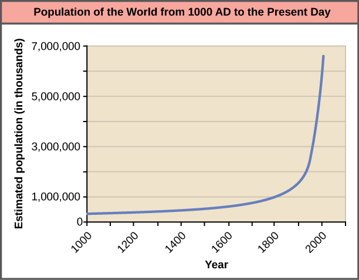
Woolly mammoths began to go extinct about 10,000 years ago, soon after paleontologists believe humans able to hunt them began to colonize North America and northern Eurasia (Figure 19.8). A mammoth population survived on Wrangel Island, in the East Siberian Sea, and was isolated from human contact until as recently as 1700 BC. We know a lot about these animals from carcasses found frozen in the ice of Siberia and other northern regions.
It is commonly thought that climate change and human hunting led to their extinction. A 2008 study estimated that climate change reduced the mammoth's range from 3,000,000 square miles 42,000 years ago to 310,000 square miles 6,000 years ago. Through archaeological evidence of kill sites, it is also well documented that humans hunted these animals. A 2012 study concluded that no single factor was exclusively responsible for the extinction of these magnificent creatures. In addition to climate change and reduction of habitat, scientists demonstrated another important factor in the mammoth's extinction was the migration of human hunters across the Bering Strait to North America during the last ice age 20,000 years ago.
The maintenance of stable populations was and is very complex, with many interacting factors determining the outcome. It is important to remember that humans are also part of nature. Once we contributed to a species' decline using primitive hunting technology only.
Population ecologists have hypothesized that suites of characteristics may evolve in species that lead to particular adaptations to their environments. These adaptations impact the kind of population growth their species experience. Life history characteristics such as birth rates, age at first reproduction, the numbers of offspring, and even death rates evolve just like anatomy or behavior, leading to adaptations that affect population growth. Population ecologists have described a continuum of life-history "strategies" with K-selected species on one end and r-selected species on the other. K-selected species are adapted to stable, predictable environments. Populations of K-selected species tend to exist close to their carrying capacity. These species tend to have larger, but fewer, offspring and contribute large amounts of resources to each offspring. Elephants would be an example of a K-selected species. r-selected species are adapted to unstable and unpredictable environments. They have large numbers of small offspring. Animals that are r-selected do not provide a lot of resources or parental care to offspring, and the offspring are relatively self-sufficient at birth. Examples of r-selected species are marine invertebrates such as jellyfish and plants such as the dandelion. The two extreme strategies are at two ends of a continuum on which real species life histories will exist. In addition, life history strategies do not need to evolve as suites, but can evolve independently of each other, so each species may have some characteristics that trend toward one extreme or the other.
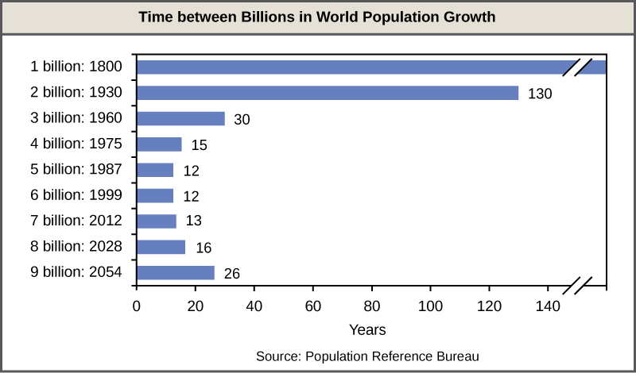
Compare and contrast exponential growth and logistic growth, including the shape of their growth curves. Explain what carrying capacity (K) means and why populations often fluctuate around it. Then describe the difference between density-dependent and density-independent regulation factors, giving at least one example of each.
- Discuss how human population growth can be exponential
- Explain how humans have expanded the carrying capacity of their habitat
- Relate population growth and age structure to the level of economic development in different countries
- Discuss the long-term implications of unchecked human population growth
Concepts of animal population dynamics can be applied to human population growth. Humans are not unique in their ability to alter their environment. For example, beaver dams alter the stream environment where they are built. Humans, however, have the ability to alter their environment to increase its carrying capacity, sometimes to the detriment of other species. Earth's human population and their use of resources are growing rapidly, to the extent that some worry about the ability of Earth's environment to sustain its human population. Long-term exponential growth carries with it the potential risks of famine, disease, and large-scale death, as well as social consequences of crowding such as increased crime.
Human technology and particularly our harnessing of the energy contained in fossil fuels have caused unprecedented changes to Earth's environment, altering ecosystems to the point where some may be in danger of collapse. Changes on a global scale including depletion of the ozone layer, desertification and topsoil loss, and global climate change are caused by human activities.
The world's human population is presently growing exponentially (Figure 19.9).
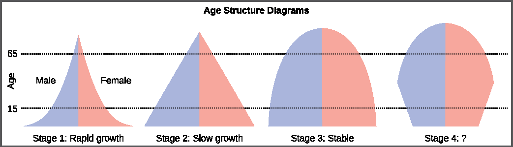
A consequence of exponential growth rate is that the time that it takes to add a particular number of humans to the population is becoming shorter. Figure 19.10 shows that 123 years were necessary to add 1 billion humans between 1804 and 1930, but it only took 24 years to add the two billion people between 1975 and 1999. This acceleration in growth rate will likely begin to decrease in the coming decades. Despite this, the population will continue to increase and the threat of overpopulation remains, particularly because the damage caused to ecosystems and biodiversity is lowering the human carrying capacity of the planet.
Humans are unique in their ability to alter their environment in myriad ways. This ability is responsible for human population growth because it resets the carrying capacity and overcomes density-dependent growth regulation. Much of this ability is related to human intelligence, society, and communication. Humans construct shelters to protect themselves from the elements and have developed agriculture and domesticated animals to increase their food supplies. In addition, humans use language to communicate this technology to new generations, allowing them to improve upon previous accomplishments.
Other factors in human population growth are migration and public health. Humans originated in Africa, but we have since migrated to nearly all inhabitable land on Earth, thus, increasing the area that we have colonized. Public health, sanitation, and the use of antibiotics and vaccines have decreased the ability of infectious disease to limit human population growth in developed countries. In the past, diseases such as the bubonic plaque of the fourteenth century killed between 30 and 60 percent of Europe's population and reduced the overall world population by as many as one hundred million people. Infectious disease continues to have an impact on human population growth. For example, life expectancy in sub-Saharan Africa, which was increasing from 1950 to 1990, began to decline after 1985 largely as a result of HIV/AIDS mortality. The reduction in life expectancy caused by HIV/AIDS was estimated to be 7 years for 2005.
Declining life expectancy is an indicator of higher mortality rates and leads to lower birth rates.
The fundamental cause of the acceleration of growth rate for humans in the past 200 years has been the reduced death rate due to a development of the technological advances of the industrial age, urbanization that supported those technologies, and especially the exploitation of the energy in fossil fuels. Fossil fuels are responsible for dramatically increasing the resources available for human population growth through agriculture (mechanization, pesticides, and fertilizers) and harvesting wild populations.
The age structure of a population is an important factor in population dynamics. Age structure is the proportion of a population in different age classes. Models that incorporate age structure allow better prediction of population growth, plus the ability to associate this growth with the level of economic development in a region. Countries with rapid growth have a pyramidal shape in their age structure diagrams, showing a preponderance of younger individuals, many of whom are of reproductive age (Figure 19.11). This pattern is most often observed in underdeveloped countries where individuals do not live to old age because of less-than-optimal living conditions, and there is a high birth rate. Age structures of areas with slow growth, including developed countries such as the United States, still have a pyramidal structure, but with many fewer young and reproductive-aged individuals and a greater proportion of older individuals. Other developed countries, such as Italy, have zero population growth. The age structure of these populations is more conical, with an even greater percentage of middle-aged and older individuals. The actual growth rates in different countries are shown in Figure 19.12, with the highest rates tending to be in the less economically developed countries of Africa and Asia.
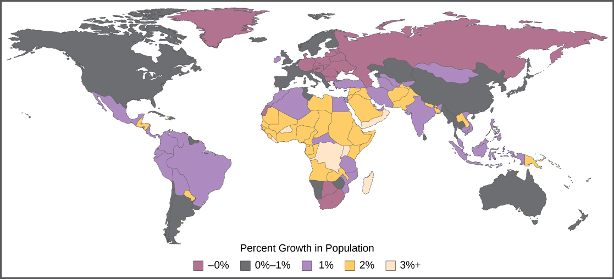
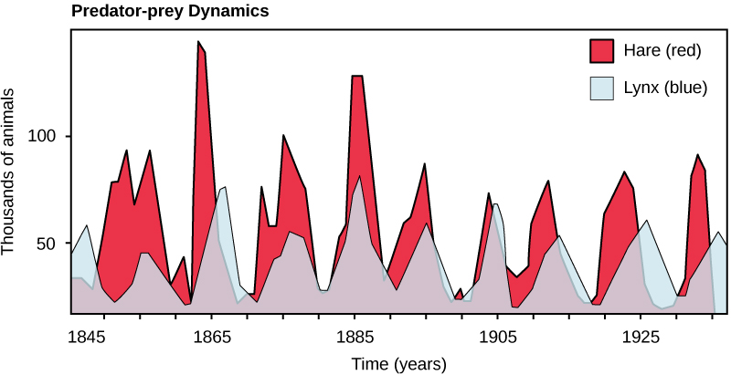
Many dire predictions have been made about the world's population leading to a major crisis called the "population explosion." In the 1968 book The Population Bomb, biologist Dr. Paul R. Ehrlich wrote, "The battle to feed all of humanity is over. In the 1970s hundreds of millions of people will starve to death in spite of any crash programs embarked upon now. At this late date nothing can prevent a substantial increase in the world death rate." While many critics view this statement as an exaggeration, the laws of exponential population growth are still in effect, and unchecked human population growth cannot continue indefinitely.
Efforts to moderate population control led to the one-child policy in China, which imposes fines on urban couples who have more than one child. Due to the fact that some couples wish to have a male heir, many Chinese couples continue to have more than one child. The effectiveness of the policy in limiting overall population growth is controversial, as is the policy itself. Moreover, there are stories of female infanticide having occurred in some of the more rural areas of the country. Family planning education programs in other countries have had highly positive effects on limiting population growth rates and increasing standards of living. In spite of population control policies, the human population continues to grow. Because of the subsequent need to produce more and more food to feed our population, inequalities in access to food and other resources will continue to widen. The United Nations estimates the future world population size could vary from 6 billion (a decrease) to 16 billion people by the year 2100. There is no way to know whether human population growth will moderate to the point where the crisis described by Dr. Ehrlich will be averted.
Another consequence of population growth is the change and degradation of the natural environment. Many countries have attempted to reduce the human impact on climate change by limiting their emission of greenhouse gases. However, a global climate change treaty remains elusive, and many underdeveloped countries trying to improve their economic condition may be less likely to agree with such provisions without compensation if it means slowing their economic development. Furthermore, the role of human activity in causing climate change has become a hotly debated socio-political issue in some developed countries, including the United States. Thus, we enter the future with considerable uncertainty about our ability to curb human population growth and protect our environment to maintain the carrying capacity for the human species.
Explain how humans have expanded the carrying capacity of their environment. Describe the relationship between age structure and economic development, referencing the differences between rapidly growing, slowly growing, and stable populations. Discuss the long-term consequences of unchecked human population growth on ecosystems and biodiversity.
- Discuss the predator-prey cycle
- Give examples of defenses against predation and herbivory
- Describe the competitive exclusion principle
- Give examples of symbiotic relationships between species
- Describe community structure and succession
In general, populations of one species never live in isolation from populations of other species. The interacting populations occupying a given habitat form an ecological community. The number of species occupying the same habitat and their relative abundance is known as the diversity of the community. Areas with low species diversity, such as the glaciers of Antarctica, still contain a wide variety of living organisms, whereas the diversity of tropical rainforests is so great that it cannot be accurately assessed. Scientists study ecology at the community level to understand how species interact with each other and compete for the same resources.
Perhaps the classical example of species interaction is the predator-prey relationship. The narrowest definition of the predator-prey interaction describes individuals of one population that kill and then consume the individuals of another population. Population sizes of predators and prey in a community are not constant over time, and they may vary in cycles that appear to be related. The most often cited example of predator-prey population dynamics is seen in the cycling of the lynx (predator) and the snowshoe hare (prey), using 100 years of trapping data from North America (Figure 19.13). This cycling of predator and prey population sizes has a period of approximately ten years, with the predator population lagging one to two years behind the prey population. An apparent explanation for this pattern is that as the hare numbers increase, there is more food available for the lynx, allowing the lynx population to increase as well. When the lynx population grows to a threshold level, however, they kill so many hares that hare numbers begin to decline, followed by a decline in the lynx population because of scarcity of food. When the lynx population is low, the hare population size begins to increase due, in part, to low predation pressure, starting the cycle anew.
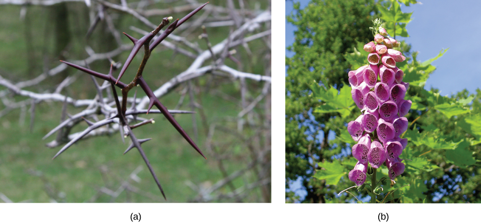
Predation and predator avoidance are strong selective agents. Any heritable character that allows an individual of a prey population to better evade its predators will be represented in greater numbers in later generations. Likewise, traits that allow a predator to more efficiently locate and capture its prey will lead to a greater number of offspring and an increase in the commonness of the trait within the population. Such ecological relationships between specific populations lead to adaptations that are driven by reciprocal evolutionary responses in those populations. Species have evolved numerous mechanisms to escape predation and herbivory (the consumption of plants for food). Defenses may be mechanical, chemical, physical, or behavioral.
Mechanical defenses, such as the presence of armor in animals or thorns in plants, discourage predation and herbivory by discouraging physical contact (Figure 19.14a). Many animals produce or obtain chemical defenses from plants and store them to prevent predation. Many plant species produce secondary plant compounds that serve no function for the plant except that they are toxic to animals and discourage consumption. For example, the foxglove produces several compounds, including digitalis, that are extremely toxic when eaten (Figure 19.14b). (Biomedical scientists have purposed the chemical produced by foxglove as a heart medication, which has saved lives for many decades.)

Many species use physical appearance, such as body shape and coloration, to avoid being detected by predators. The tropical walking stick is an insect with the coloration and body shape of a twig, which makes it very hard to see when it is stationary against a background of real twigs (Figure 19.15a). In another example, the chameleon can, within limitations, change its color to match its surroundings (Figure 19.15b). There are many behavioral adaptations to avoid or confuse predators. Playing dead and traveling in large groups, like schools of fish or flocks of birds, are both behaviors that reduce the risk of being eaten.

Some species use coloration as a way of warning predators that they are distasteful or poisonous. For example, the monarch butterfly caterpillar sequesters poisons from its food (plants and milkweeds) to make itself poisonous or distasteful to potential predators. The caterpillar is bright yellow and black to advertise its toxicity. The caterpillar is also able to pass the sequestered toxins on to the adult monarch, which is also dramatically colored black and red as a warning to potential predators. Fire-bellied toads produce toxins that make them distasteful to their potential predators. They have bright red or orange coloration on their bellies, which they display to a potential predator to advertise their poisonous nature and discourage an attack. These are only two examples of warning coloration, which is a relatively common adaptation. Warning coloration only works if a predator uses eyesight to locate prey and can learn—a naïve predator must experience the negative consequences of eating one before it will avoid other similarly colored individuals (Figure 19.16).

While some predators learn to avoid eating certain potential prey because of their coloration, other species have evolved mechanisms to mimic this coloration to avoid being eaten, even though they themselves may not be unpleasant to eat or contain toxic chemicals. In some cases of mimicry, a harmless species imitates the warning coloration of a harmful species. Assuming they share the same predators, this coloration then protects the harmless ones. Many insect species mimic the coloration of wasps, which are stinging, venomous insects, thereby discouraging predation (Figure 19.17).

In other cases of mimicry, multiple species share the same warning coloration, but all of them actually have defenses. The commonness of the signal improves the compliance of all the potential predators. Figure 19.18 shows a variety of foul-tasting butterflies with similar coloration.

Resources are often limited within a habitat and multiple species may compete to obtain them. Ecologists have come to understand that all species have an ecological niche. A niche is the unique set of resources used by a species, which includes its interactions with other species. The competitive exclusion principle states that two species cannot occupy the same niche in a habitat: in other words, different species cannot coexist in a community if they are competing for all the same resources. This principle works because if there is an overlap in resource use and therefore competition between two species, then traits that lessen reliance on the shared resource will be selected for leading to evolution that reduces the overlap. If either species is unable to evolve to reduce competition, then the species that most efficiently exploits the resource will drive the other species to extinction. An experimental example of this principle is shown in Figure 19.19 with two protozoan species: Paramecium aurelia and Paramecium caudatum. When grown individually in the laboratory, they both thrive. But when they are placed together in the same test tube (habitat), P. aurelia outcompetes P. caudatum for food, leading to the latter's eventual extinction.

Symbiotic relationships are close, long-term interactions between individuals of different species. Symbioses may be commensal, in which one species benefits while the other is neither harmed nor benefited; mutualistic, in which both species benefit; or parasitic, in which the interaction harms one species and benefits the other.
A commensal relationship occurs when one species benefits from a close prolonged interaction, while the other neither benefits nor is harmed. Birds nesting in trees provide an example of a commensal relationship (Figure 19.20). The tree is not harmed by the presence of the nest among its branches. The nests are light and produce little strain on the structural integrity of the branch, and most of the leaves, which the tree uses to get energy by photosynthesis, are above the nest so they are unaffected. The bird, on the other hand, benefits greatly. If the bird had to nest in the open, its eggs and young would be vulnerable to predators. Many potential commensal relationships are difficult to identify because it is difficult to prove that one partner does not derive some benefit from the presence of the other.

A second type of symbiotic relationship is called mutualism, in which two species benefit from their interaction. For example, termites have a mutualistic relationship with protists that live in the insect's gut (Figure 19.21a). The termite benefits from the ability of the protists to digest cellulose. However, the protists are able to digest cellulose only because of the presence of symbiotic bacteria within their cells that produce the cellulase enzyme. The termite itself cannot do this: without the protozoa, it would not be able to obtain energy from its food (cellulose from the wood it chews and eats). The protozoa benefit by having a protective environment and a constant supply of food from the wood chewing actions of the termite. In turn, the protists benefit from the enzymes provided by their bacterial endosymbionts, while the bacteria benefit from a doubly protective environment and a constant source of nutrients from two hosts. Lichen are a mutualistic relationship between a fungus and photosynthetic algae or cyanobacteria (Figure 19.21b). The glucose produced by the algae provides nourishment for both organisms, whereas the physical structure of the lichen protects the algae from the elements and makes certain nutrients in the atmosphere more available to the algae. The algae of lichens can live independently given the right environment, but many of the fungal partners are unable to live on their own.

A parasite is an organism that feeds off another without immediately killing the organism it is feeding on. In this relationship, the parasite benefits, but the organism being fed upon, the host, is harmed. The host is usually weakened by the parasite as it siphons resources the host would normally use to maintain itself. Parasites may kill their hosts, but there is usually selection to slow down this process to allow the parasite time to complete its reproductive cycle before it or its offspring are able to spread to another host.
The reproductive cycles of parasites are often very complex, sometimes requiring more than one host species. A tapeworm causes disease in humans when contaminated, undercooked meat such as pork, fish, or beef is consumed (Figure 19.22). The tapeworm can live inside the intestine of the host for several years, benefiting from the host's food, and it may grow to be over 50 feet long by adding segments. The parasite moves from one host species to a second host species in order to complete its life cycle. Plasmodium falciparum is another parasite: the protists that cause malaria, a significant disease in many parts of the world. Living inside human liver and red blood cells, the organism reproduces asexually in the human host and then sexually in the gut of blood-feeding mosquitoes to complete its life cycle. Thus malaria is spread from human to mosquito and back to human, one of many arthropod-borne infectious diseases of humans.

Communities are complex systems that can be characterized by their structure (the number and size of populations and their interactions) and dynamics (how the members and their interactions change over time). Understanding community structure and dynamics allows us to minimize impacts on ecosystems and manage ecological communities we benefit from.
Ecologists have extensively studied one of the fundamental characteristics of communities: biodiversity. One measure of biodiversity used by ecologists is the number of different species in a particular area and their relative abundance. The area in question could be a habitat, a biome, or the entire biosphere. Species richness is the term used to describe the number of species living in a habitat or other unit. Species richness varies across the globe (Figure 19.23). Ecologists have struggled to understand the determinants of biodiversity. Species richness is related to latitude: the greatest species richness occurs near the equator and the lowest richness occurs near the poles. Other factors influence species richness as well. Island biogeography attempts to explain the great species richness found in isolated islands, and has found relationships between species richness, island size, and distance from the mainland.
Relative species abundance is the number individuals in a species relative to the total number of individuals in all species within a system. Foundation species, described below, often have the highest relative abundance of species.

Foundation species are considered the "base" or "bedrock" of a community, having the greatest influence on its overall structure. They are often primary producers, and they are typically an abundant organism. For example, kelp, a species of brown algae, is a foundation species that forms the basis of the kelp forests off the coast of California. Foundation species may physically modify the environment to produce and maintain habitats that benefit the other organisms that use them. Examples include the kelp described above or tree species found in a forest. The photosynthetic corals of the coral reef also provide structure by physically modifying the environment (Figure 19.24). The exoskeletons of living and dead coral make up most of the reef structure, which protects many other species from waves and ocean currents.

A keystone species is one whose presence has inordinate influence in maintaining the prevalence of various species in an ecosystem, the ecological community's structure, and sometimes its biodiversity. Pisaster ochraceus, the intertidal sea star, is a keystone species in the northwestern portion of the United States (Figure 19.25). Studies have shown that when this organism is removed from communities, mussel populations (their natural prey) increase, which completely alters the species composition and reduces biodiversity. Another keystone species is the banded tetra, a fish in tropical streams, which supplies nearly all of the phosphorus, a necessary inorganic nutrient, to the rest of the community. The banded tetra feeds largely on insects from the terrestrial ecosystem and then excretes phosphorus into the aquatic ecosystem. The relationships between populations in the community, and possibly the biodiversity, would change dramatically if these fish were to become extinct.

Community dynamics are the changes in community structure and composition over time, often following environmental disturbances such as volcanoes, earthquakes, storms, fires, and climate change. Communities with a relatively constant number of species are said to be at equilibrium. The equilibrium is dynamic with species identities and relationships changing over time, but maintaining relatively constant numbers. Following a disturbance, the community may or may not return to the equilibrium state.
Succession describes the sequential appearance and disappearance of species in a community over time after a severe disturbance. In primary succession, newly exposed or newly formed rock is colonized by living organisms; in secondary succession, a part of an ecosystem is disturbed and remnants of the previous community remain. In both cases, there is a sequential change in species until a more or less permanent community develops.
Primary succession occurs when new land is formed, for example, following the eruption of volcanoes, such as those on the Big Island of Hawaii. As lava flows into the ocean, new land is continually being formed. On the Big Island, approximately 32 acres of land is added to it its size each year. Weathering and other natural forces break down the rock enough for the establishment of hearty species such as lichens and some plants, known as pioneer species (Figure 19.26). These species help to further break down the mineral-rich lava into soil where other, less hardy but more competitive species, such as grasses, shrubs, and trees, will grow and eventually replace the pioneer species. Over time the area will reach an equilibrium state, with a set of organisms quite different from the pioneer species.

A classic example of secondary succession occurs in oak and hickory forests cleared by wildfire (Figure 19.27). Wildfires will burn most vegetation, and unless the animals can flee the area, they are killed. Their nutrients, however, are returned to the ground in the form of ash. Thus, although the community has been dramatically altered, there is a soil ecosystem present that provides a foundation for rapid recolonization.
Before the fire, the vegetation was dominated by tall trees with access to the major plant energy resource: sunlight. Their height gave them access to sunlight while also shading the ground and other low-lying species. After the fire, though, these trees are no longer dominant. Thus, the first plants to grow back are usually annual plants followed within a few years by quickly growing and spreading grasses and other pioneer species. Due, at least in part, to changes in the environment brought on by the growth of grasses and forbs, over many years, shrubs emerge along with small pine, oak, and hickory trees. These organisms are called intermediate species. Eventually, over 150 years, the forest will reach its equilibrium point and resemble the community before the fire. This equilibrium state is referred to as the climax community, which will remain until the next disturbance. The climax community is typically characteristic of a given climate and geology. Although the community in equilibrium looks the same once it is attained, the equilibrium is a dynamic one with constant changes in abundance and sometimes species identities. The return of a natural ecosystem after agricultural activities is also a well-documented secondary succession process.

Describe the predator-prey cycle using the lynx and snowshoe hare example. Explain at least two types of defense mechanisms against predation. Define the competitive exclusion principle and give an example. Compare and contrast the three types of symbiotic relationships. Describe the difference between primary and secondary succession.
- Population Demographics and Dynamics (density, distribution, survivorship curves, demography) — CB 19.1
- Population Growth and Regulation (exponential/logistic growth, carrying capacity, r/K selection) — CB 19.2
- The Human Population (exponential growth, age structure, demographic transition, carrying capacity) — CB 19.3
- Community Ecology (predation, mimicry, symbiosis, competition, keystone species, succession) — CB 19.4